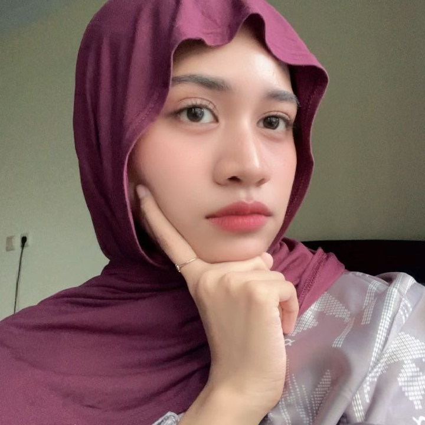
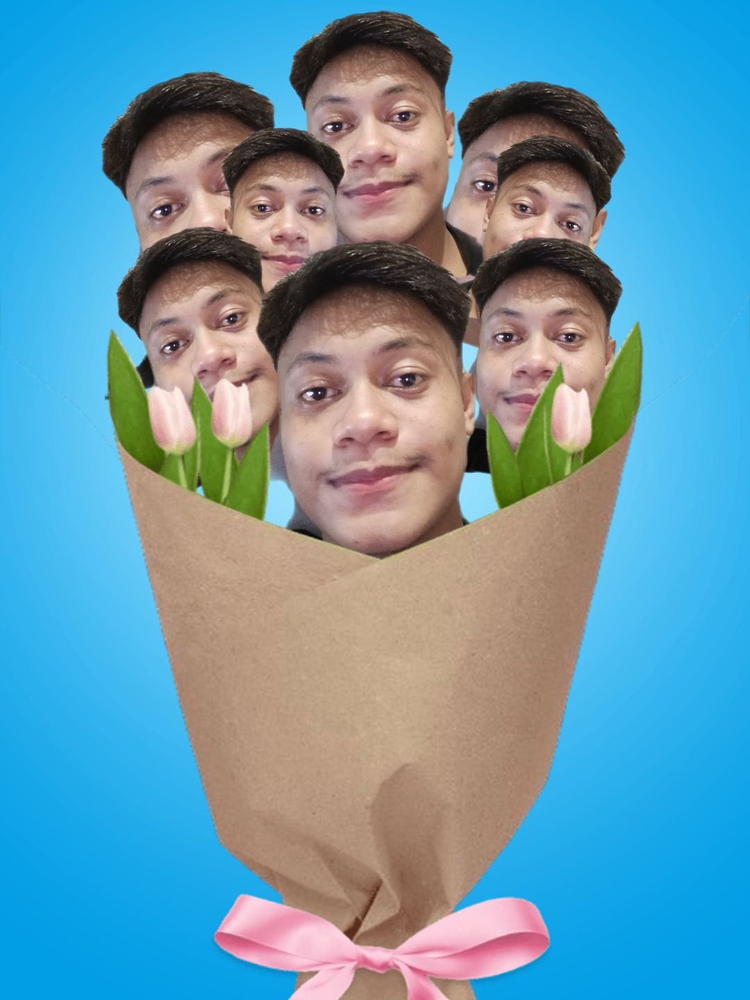
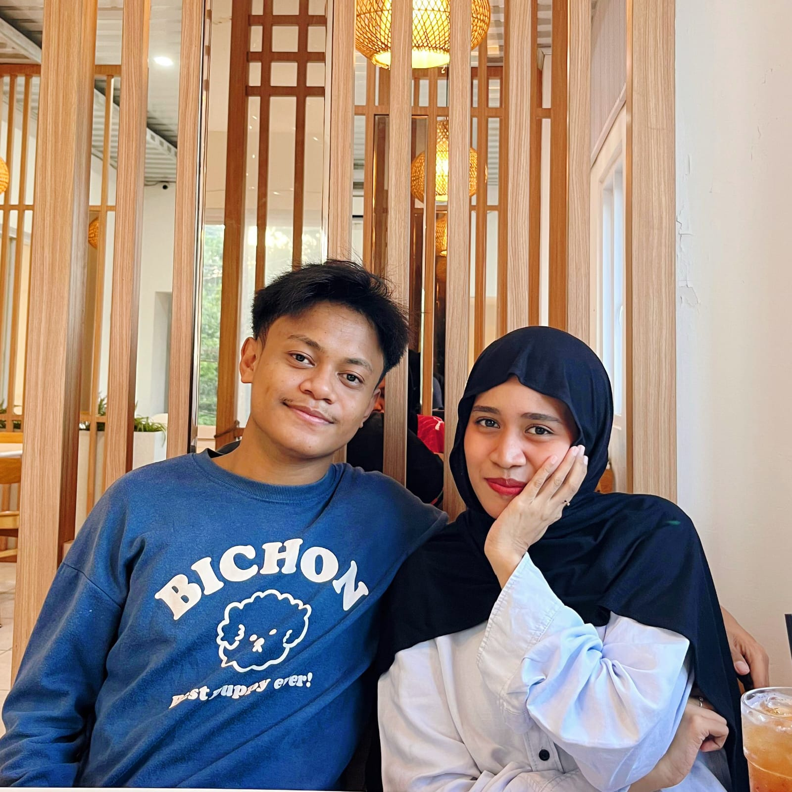

buat the most pretty girl in the world yang paling GORGEOUS.
Aku tau kamu lagi bete banget sama aku, dan aku sadar aku salah.

Maafin aku ya udah bikin kamu kesel karena terus-terusan maksa kamu konsul ke dosen. Niat aku cuma mau liat kamu cepet kelar, tapi caraku malah bikin kamu kesel gini yangg.

Nih, aku pake filter bunga biar kamu ketawa. Pacarmu yang nyebelin ini beneran nyesel dan minta maaf banget ke kamu sayanggkuu cintakuuuu. Aku Sayanggg Bangett sama kamuuu cintakkuuu ❤️

AKU SAYANG KAMU
LOVE U SAYANGGKUU CINTAKUU CANTIKKUUU
Besok aku punya kejutan kecil buat kamu.
Jadi... dimaafin kan? 🥺
Maafin Dong ❤️